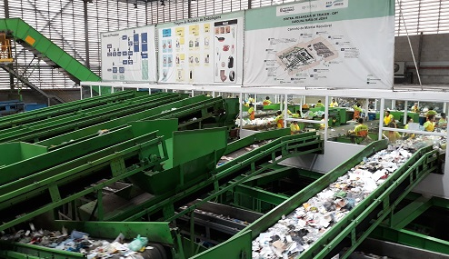
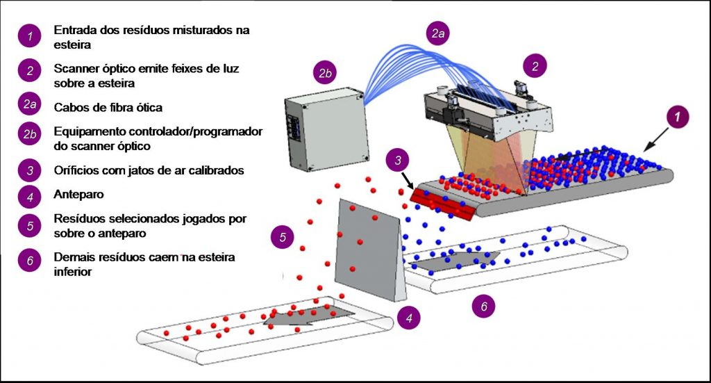

A cadeia da Reciclagem já conta, em alguns países, com a ajuda de novas tecnologias para melhorar sua performance. Alguns destes países já conseguem obter índices de resíduos reciclados superiores a 16% do total de resíduos coletados.
No Brasil, nos municípios onde há coleta seletiva implantada, os resíduos recicláveis são inicialmente separados dos resíduos orgânicos nas residências dos consumidores. Posteriormente, são coletados pelas empresas públicas de limpeza urbana, e encaminhados às cooperativas de catadores. Nas cooperativas, os resíduos são separados manualmente de acordo com o tipo de material, coloração, e valor de revenda. Várias cooperativas já possuem equipamentos para aumentar o volume de resíduos tratados, tais como garras mecânicas, pás carregadeiras, esteiras rolantes, e prensas industriais.
Futuramente, novas tecnologias virão para o Brasil, para ajudar na reciclagem do lixo. Assim, gerando mais na formação de novas cooperativas.
A indústria brasileira é atenta a estas novas tecnologias na reciclagem e já temos fabricantes locais para as esteiras rolantes, pás mecânicas, garras mecânicas e prensas especializadas. As cooperativas mais organizadas já conseguiram inclusive adotar algumas destas tecnologias, melhorando sua produtividade, ampliando o volume processado e gerando mais empregos.
São Paulo irá utilizar equipamentos com sensores ópticos de infravermelho, separadores balísticos e magnéticos. Máquinas vão rasgar os sacos de lixo, ímãs vão separar o material ferroso, câmeras ópticas vão dividir o plástico, por cor, e prensas vão montar os fardos para serem vendidos. Essa tecnologia já é utilizada em diversos países, como os EUA, França, Alemanha, Portugal e Espanha, entre outros. Walter de Freitas, da EcoUrbis, cita os resultados já obtidos em outros países, como estímulo ao uso dessas tecnologias.
Em Nova Iorque, EUA, o município inaugurou em 2013 uma unidade de reciclagem totalmente automatizada, chamada Sunset Park Material Recovery Facility, com capacidade para processar até 1000 toneladas diárias. Com cerca de 85 funcionários divididos em 2 turnos, a unidade recebe o resíduo reciclável das residências de vários bairros da cidade. 
A novidade dessa indústria nos Estados Unidos, está relacionadas aos Scanner Ópitcos cada scanner fica “fotografando” várias vezes por segundo um ponto específico da esteira. Dessa forma, permite identificar cada tipo de material que está passando ali, e sua posição na esteira. Logo adiante, no final da esteira, há 200 saídas de ar. Quando o material que se deseja segregar passa por este ponto, as saídas de ar localizadas sob ele são acionadas e o material é então “soprado” pra fora da esteira, recolhido em outra seqüência de esteiras. Os demais materiais caem e seguem adiante. 
Os scanners podem ser reconfigurado rapidamente para identificar um diferente tipo de material. Se um tipo de resíduo passou a ter mais valor comercial, ele pode ser facilmente incluído, e outro de pouco valor, retirado. Desta forma, é composta uma sequência de segregação dos materiais bastante eficiente, tanto sob o ponto de vista operacional como comercial.
Em algumas úsinas de reciclagem possuem painéis solares e instalou recentemente uma turbina eólica. Assim, 20% da eletricidade consumida provém de fontes alternativas de energia próprias, reduzindo ainda mais os custos de operação.